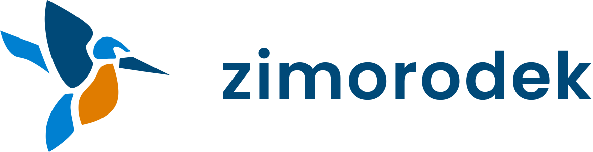

Zaloguj sięAplikacja & mapy
Zezwolenia wędkarskie, mapy batymetryczne
i sklepy w okolicy — mobile & desktop

Zaloguj sięZezwolenia wędkarskie, mapy batymetryczne
i sklepy w okolicy — mobile & desktop
Ukształtowanie dna, spadki i górki podwodne — sprawdź łowisko, zanim zarzucisz wędkę.